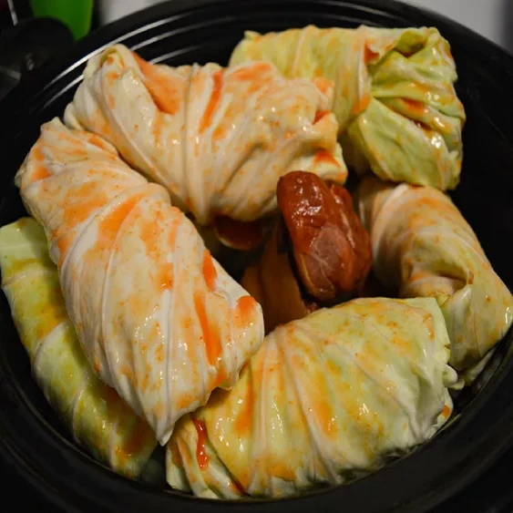

Remove the leaves from the head of cabbage.
Mix beef, pork, ham, uncooked rice, onion, egg, salt, pepper, and garlic powder together in a bowl until well combined.
Form mixture into oblong balls, using 1/2 cup of the mixture at a time. Wrap a cabbage leaf around each ball.
Spread sauerkraut in the bottom of a large pot. Layer cabbage rolls on top, placing them seam-side down.
Pour tomato juice over rolls, then add enough water to cover and bring to a boil. Reduce the heat to low and simmer for
about 3 hours, adding more water as necessary.